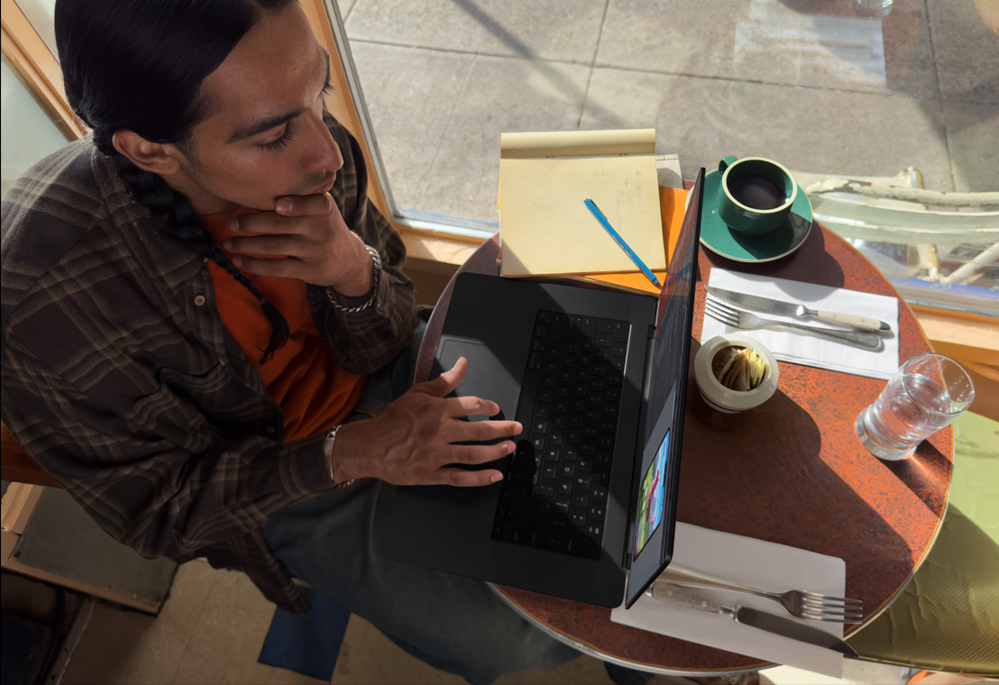

Mac
If you can dream it,
Mac can do it.
Easy to use. Easy to love
Familiar as iPhone.You’ll feel right at home on Mac, with many of the
same apps as iPhone — like Messages, Photos, Notes, and FaceTime.
Fully loaded. Get started with apps you’ll use every day, like Mail, Calendar, and Safari for surfing the web. And if you want to create documents, spreadsheets, or presentations, there are powerful built-in productivity apps like Pages, Numbers, and Keynote.

Simple setup.Migration Assistant makes it easy to transfer your data — including documents, photos, settings, and user accounts — from your previous Mac or PC.

Go fast. Go far.
Supercharged by Apple silicon. Apple silicon brings game-changing power and speed to Mac. It integrates the CPU, GPU, and Neural Engine onto a single power-efficient chip, accelerating everything you do.
Best-in-class battery life.
Thanks to the efficiency of Apple silicon, Mac laptops deliver exceptional battery life with incredible performance whether you’re plugged in or not.

Work smart. And fast.
From designing a stunning presentation to making an epic spreadsheet, Mac lets you get more done faster — whether you’re running to class or running a business.
Create at the speed of your imagination.From recording a podcast to editing your first feature film, you can do, make, and create in all-new ways with the speed and power of the ultracapable Mac.

Dream team.
Mac answers the call.You can answer calls or messages from your iPhone directly on your Mac. All the messages that appear on your iPhone appear on your Mac, too.
Shoot on iPhone. See it on Mac.Use your iPhone to take a picture or scan a document and have it automatically appear on your Mac.
Start here. Finish there.Start an email on your iPhone and finish it on your Mac. With Handoff, when your Mac and iPhone are near each other, you can seamlessly pass what you’re doing from one device to the other.